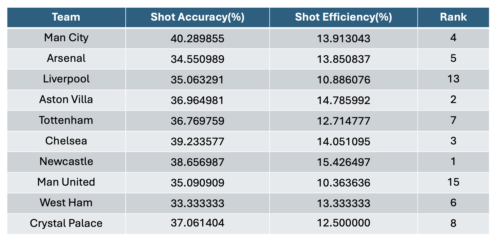
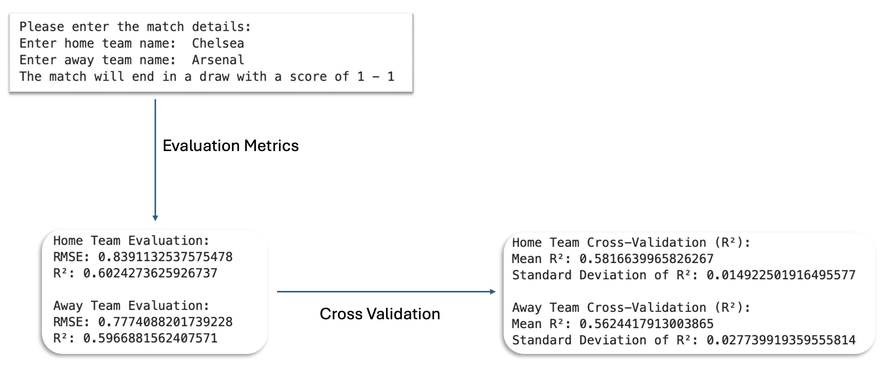

Football is more than just a game—it's a sport driven by strategy, performance, and unpredictable moments. As a football enthusiast, I've always been fascinated by how data can reveal patterns in team performance and match outcomes. When I came across this dataset, I saw an opportunity to explore football through the lens of data analysis, uncovering insights that go beyond what we see on the pitch.
The dataset is sourced from DataHub.io via Football-Data.co.uk. It provides comprehensive statistical data on English Premier League matches starting from the 1993/1994 season up to the current season. It includes metrics such as goals scored, attempted shots, shots on target, yellow and red cards, fouls and corners - split into home and away statistics. This dataset provides an excellent foundation for answering key questions related to trends and team performance.
To analyze this data, I focused on five main guiding questions:
- Home vs. Away Performance: Do teams perform better at home compared to away? How significant is home advantage in goal scoring?
- Shooting Performance & Team Standings: Do higher-ranked teams exhibit better shot accuracy and efficiency? How crucial is finishing ability in determining league standings?
- The Impact of Discipline on Goal Scoring: Is there a correlation between the number of yellow/red cards a team receives and their goal-scoring performance?
- The Rise of Comeback Wins: How has the number of teams overturning a halftime deficit to win evolved over the past decade? Are teams becoming better at second-half comebacks?
- Predicting Match Outcomes: Can machine learning models predict the number of goals a team will score based on past performance? How accurate is our model in forecasting results?
Each section of this analysis focuses on one of these questions by using data exploration, visualization and predictive modeling to provide insights. Let's start by looking at how teams perform at home versus away and whether home advantage actually makes a difference.
Home vs Away Performance
One of the most widely debated aspects of football is whether playing at home provides a significant advantage. Fans, familiar stadiums, and reduced travel stress are often cited as reasons why teams tend to perform better on their home turf. But does the data support this theory?
To investigate, I analyzed the total number of goals scored by teams when playing at home versus when playing away. The results reveal a consistent pattern: teams tend to score more goals at home than away. This trend suggests that home advantage is a real phenomenon, likely influenced by factors such as crowd support and pitch familiarity.

A closer look at the 2023-24 season bar chart reveals additional insights:
- Manchester City, Arsenal and Liverpool have high goal counts both at home and away, suggesting they are consistently strong regardless of location.
- Newcastle United and Aston Villa show a significant increase in home goals compared to their away performance, indicating they thrive in their home environment.
- Crystal Palace and Manchester United exhibit noticeably lower goal counts away from home, suggesting difficulties in attacking play when playing on the road.
Shooting Performance & Team Standings
A team's ability to convert chances into goals is often what separates the best from the rest. While possession and passing accuracy are important, ultimately, it is shooting efficiency that determines match outcomes. This section explores whether higher-ranked teams exhibit better shot accuracy and efficiency compared to lower-ranked teams.
Here are two cluster bar charts(2023-24 season): one depicting the teams attempted shots(HS for home/AS for away), shots on target(HST for home/AST for away), and goals scored(FTHG for home/FTAG for away) for home games, and the other for away games.

Below is a table that that offers better understanding of the data. The teams are in the order they finished the league at the end of the 2023-24 season. 
The data reveals some interesting trends:
- Newcastle United has the highest shot efficiency but finished 7th, suggesting that while finishing ability is important, other factors like defense and match control play a significant role.
- Manchester City has the best shot accuracy but only the 4th best shot efficiency, indicating that while they create quality chances, finishing consistency varies.
- Liverpool and Manchester United struggle with efficiency, suggesting they need better finishing to improve their standing.
In general, higher-ranked teams do tend to have better shot accuracy and efficiency. However, ranking is not determined solely by shooting performance—other factors like defensive strength, chance creation, and match control play a significant role in overall success.
The Impact of Discipline on Goal Scoring
Discipline plays a crucial role in football, affecting not just the defensive stability of a team but also its attacking output. The question arises: does accumulating more yellow and red cards have a significant impact on the number of goals a team scores?
To investigate this, I analyzed the correlation between the total number of cards (yellow and red) and goals scored for both home and away teams.

The trendline equations from the analysis are:
- Home Goals = -0.0404 * Total Home Cards + 1.8799
- Away Goals = -0.1094 * Total Away Cards + 1.7354
These equations suggest a slight negative correlation, meaning that as the number of cards increases, goal-scoring tends to decrease. However, the effect is not particularly significant.
The steeper slope in the away trendline suggests that discipline issues may affect away performances more than home games. This could be due to factors like referee bias or crowd influence.
The Rise of Comeback Wins
One of the most exhilarating aspects of football is witnessing a dramatic comeback, where a team overturns a halftime deficit to secure a victory. This type of turnaround highlights the unpredictability of the sport and the mental resilience of teams. Over the past decade, the frequency of such comebacks has been a topic of interest. Have teams become more proficient at making a strong second-half recovery, or is this simply a result of the increasing pace and intensity of modern football?
To investigate this trend, I analyzed data on matches where the leading team at halftime went on to lose, and where teams managed to overcome a halftime deficit to win.

- We see that the 2014-15 season, there were only 11 comeback wins after trailing at halftime. Fast forward to the 2023-24 season, the number of wins is more than double.
The data suggests that teams are capable of overturning halftime deficits, with the number of comebacks rising over the past decade. Whether through tactical adjustments, improved fitness, or psychological resilience, the ability to mount a second-half comeback has become a defining feature of modern football.
Predicting Match Outcomes
Predicting match outcomes in football has long been a challenging yet intriguing task. With so many variables at play—team form, injuries, tactics, and even luck—it's difficult to forecast the exact number of goals a team will score. However, with the power of machine learning, it is possible to predict outcomes based on historical data. In this section, I utilized a Decision Tree Regressor to predict the number of goals scored by both home and away teams in a match, and to forecast the overall match result.
I trained two separate models: one to predict the home team's goals and another for the away team's goals. These models use past performance data such as goals scored, shots attempted, shots on target, and corners from previous matches to make predictions.

The performance of the models was evaluated using the R-squared and Root Mean Squared Error (RMSE) metrics:
- Home Team Model: The R-squared value of 0.60 and RMSE of 0.83911
- Away Team Model: The R-squared value of 0.59 and RMSE of 0.777
- After cross-validation, the R-squared value for the home team model dropped slightly to 0.58166, while the away team model's R-squared settled at 0.56244.
RMSE values of 0.7 and 0.8 might seem small in absolute terms—indicating relatively low errors. However, in the context of football matches a goal can change the outcome of a game. In the above example, the model predicts the match will end 1-1, the RMSE value suggests that the actual result could range from 2-1 or 0-2 for the home side, or vice versa.
The model lacks key features that can significantly influence match outcomes, such as team form, injuries, and tactical adjustments. These factors, which are crucial in real-life match scenarios, are not captured in the current model.
Given its limitations, I would personally rather trust my gut feeling while betting on the result of the game and consider factors beyond just the numbers. Football is a game of unpredictability, and while data-driven models can be valuable tools, they can never fully replicate the nuanced dynamics that play out on the pitch.
Conclusion: Key Takeaways from the Analysis
Home vs Away Performance: Teams tend to score more goals at home than away, reinforcing the significance of home advantage. Factors such as crowd support, pitch familiarity, and referee bias could contribute to this trend.
Shooting Performance & Team Standings: While higher-ranked teams generally have better shot accuracy and efficiency, league standings are influenced by multiple factors beyond just finishing ability, including defensive strength and match control.
The Impact of Discipline on Goal Scoring: There is a slight negative correlation between the number of cards and goals scored, with away teams being more affected than home teams. However, the effect is weak, suggesting that other tactical and situational factors play a more significant role.
The Rise of Comeback Wins: Over the last decade, the number of teams coming back from a halftime deficit to win has increased, pointing to improved tactical adjustments, fitness levels, and mental resilience in modern football.
Predicting Match Outcomes: The regression model provides a useful but imperfect prediction of match scores. Given football's unpredictability and the absence of key contextual factors (injuries, tactics, form), relying solely on a statistical model remains limited.
Ultimately, while data-driven insights help in understanding trends and team performance, football remains an unpredictable game influenced by numerous intangible factors.